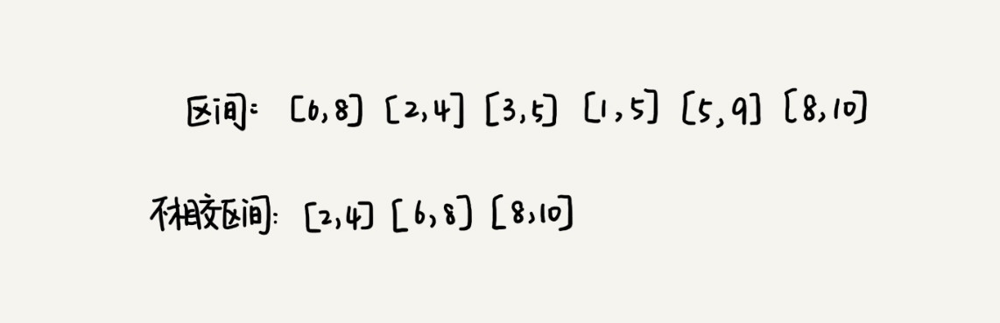
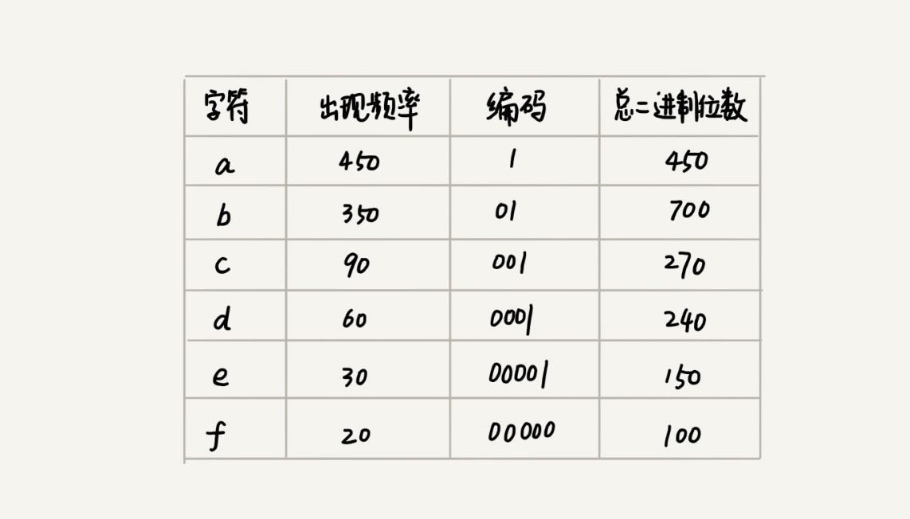

<!DOCTYPE html>


  


<html class="theme-next mist use-motion" lang="zh-Hans">
<head>
  <meta charset="UTF-8"/>
<meta http-equiv="X-UA-Compatible" content="IE=edge" />
<meta name="viewport" content="width=device-width, initial-scale=1, maximum-scale=1"/>
<meta name="theme-color" content="#222">


<meta http-equiv="Cache-Control" content="no-transform" />
<meta http-equiv="Cache-Control" content="no-siteapp" />


  
  
  <link href="/lib/fancybox/source/jquery.fancybox.css?v=2.1.5" rel="stylesheet" type="text/css" />


<link href="/lib/font-awesome/css/font-awesome.min.css?v=4.6.2" rel="stylesheet" type="text/css" />

<link href="/css/main.css?v=5.1.4" rel="stylesheet" type="text/css" />


  <link rel="apple-touch-icon" sizes="180x180" href="/images/favicon.png?v=5.1.4">


  <link rel="icon" type="image/png" sizes="32x32" href="/images/favicon.png?v=5.1.4">


  <link rel="icon" type="image/png" sizes="16x16" href="/images/favicon.png?v=5.1.4">


  <link rel="mask-icon" href="/images/favicon.png?v=5.1.4" color="#222">


  <meta name="keywords" content="算法,php," />


<meta name="description" content="贪心贪心算法有很多经典的应用，比如霍夫曼编码（Huffman Coding）、Prim 和 Kruskal 最小生成树算法、还有 Dijkstra 单源最短路径算法。 解决问题步骤第一步，当我们看到这类问题的时候，首先要联想到贪心算法：针对一组数据，我们定义了限制值和期望值，希望从中选出几个数据，在满足限制值的情况下，期望值最大。第二步，我们尝试看下这个问题是否可以用贪心算法解决：每次选择当前情况">
<meta property="og:type" content="article">
<meta property="og:title" content="算法思想">
<meta property="og:url" content="http://tit.ink/2020/12/04/%E7%AE%97%E6%B3%95%E6%80%9D%E6%83%B3/index.html">
<meta property="og:site_name" content="学习小札">
<meta property="og:description" content="贪心贪心算法有很多经典的应用，比如霍夫曼编码（Huffman Coding）、Prim 和 Kruskal 最小生成树算法、还有 Dijkstra 单源最短路径算法。 解决问题步骤第一步，当我们看到这类问题的时候，首先要联想到贪心算法：针对一组数据，我们定义了限制值和期望值，希望从中选出几个数据，在满足限制值的情况下，期望值最大。第二步，我们尝试看下这个问题是否可以用贪心算法解决：每次选择当前情况">
<meta property="og:locale">
<meta property="og:image" content="http://tit.ink/2020/12/04/%E7%AE%97%E6%B3%95%E6%80%9D%E6%83%B3/tanxin.jpg">
<meta property="og:image" content="http://tit.ink/2020/12/04/%E7%AE%97%E6%B3%95%E6%80%9D%E6%83%B3/huofuman.jpg">
<meta property="article:published_time" content="2020-12-04T09:00:23.000Z">
<meta property="article:modified_time" content="2020-12-05T10:30:55.121Z">
<meta property="article:author" content="Kaizen">
<meta property="article:tag" content="算法">
<meta property="article:tag" content="php">
<meta name="twitter:card" content="summary">
<meta name="twitter:image" content="http://tit.ink/2020/12/04/%E7%AE%97%E6%B3%95%E6%80%9D%E6%83%B3/tanxin.jpg">


<script type="text/javascript" id="hexo.configurations">
  var NexT = window.NexT || {};
  var CONFIG = {
    root: '',
    scheme: 'Mist',
    version: '5.1.4',
    sidebar: {"position":"left","display":"post","offset":12,"b2t":false,"scrollpercent":false,"onmobile":false},
    fancybox: true,
    tabs: true,
    motion: {"enable":true,"async":false,"transition":{"post_block":"fadeIn","post_header":"slideDownIn","post_body":"slideDownIn","coll_header":"slideLeftIn","sidebar":"slideUpIn"}},
    duoshuo: {
      userId: '0',
      author: '博主'
    },
    algolia: {
      applicationID: '',
      apiKey: '',
      indexName: '',
      hits: {"per_page":10},
      labels: {"input_placeholder":"Search for Posts","hits_empty":"We didn't find any results for the search: ${query}","hits_stats":"${hits} results found in ${time} ms"}
    }
  };
</script>


  <link rel="canonical" href="http://tit.ink/2020/12/04/算法思想/"/>


  <title>算法思想 | 学习小札</title>
  


<meta name="generator" content="Hexo 5.3.0"></head>

<body itemscope itemtype="http://schema.org/WebPage" lang="zh-Hans">

  
  
    
  

  <div class="container sidebar-position-left page-post-detail">
    <div class="headband"></div>
    <header id="header" class="header" itemscope itemtype="http://schema.org/WPHeader">
      <div class="header-inner"><div class="site-brand-wrapper">
  <div class="site-meta ">
    

    <div class="custom-logo-site-title">
      <a href="/"  class="brand" rel="start">
        <span class="logo-line-before"><i></i></span>
        <span class="site-title">学习小札</span>
        <span class="logo-line-after"><i></i></span>
      </a>
    </div>
      
        <p class="site-subtitle">走卓越之路，一起加油</p>
      
  </div>

  <div class="site-nav-toggle">
    <button>
      <span class="btn-bar"></span>
      <span class="btn-bar"></span>
      <span class="btn-bar"></span>
    </button>
  </div>
</div>

<nav class="site-nav">
  

  
    <ul id="menu" class="menu">
      
        
        <li class="menu-item menu-item-home">
          <a href="/" rel="section">
            
              <i class="menu-item-icon fa fa-fw fa-home"></i> <br />
            
            首页
          </a>
        </li>
      
        
        <li class="menu-item menu-item-tags">
          <a href="/tags/" rel="section">
            
              <i class="menu-item-icon fa fa-fw fa-tags"></i> <br />
            
            标签
          </a>
        </li>
      
        
        <li class="menu-item menu-item-categories">
          <a href="/categories/" rel="section">
            
              <i class="menu-item-icon fa fa-fw fa-th"></i> <br />
            
            分类
          </a>
        </li>
      
        
        <li class="menu-item menu-item-archives">
          <a href="/archives/" rel="section">
            
              <i class="menu-item-icon fa fa-fw fa-archive"></i> <br />
            
            归档
          </a>
        </li>
      
        
        <li class="menu-item menu-item-about">
          <a href="/about/" rel="section">
            
              <i class="menu-item-icon fa fa-fw fa-user"></i> <br />
            
            关于
          </a>
        </li>
      

      
        <li class="menu-item menu-item-search">
          
            <a href="javascript:;" class="popup-trigger">
          
            
              <i class="menu-item-icon fa fa-search fa-fw"></i> <br />
            
            搜索
          </a>
        </li>
      
    </ul>
  

  
    <div class="site-search">
      
  <div class="popup search-popup local-search-popup">
  <div class="local-search-header clearfix">
    <span class="search-icon">
      <i class="fa fa-search"></i>
    </span>
    <span class="popup-btn-close">
      <i class="fa fa-times-circle"></i>
    </span>
    <div class="local-search-input-wrapper">
      <input autocomplete="off"
             placeholder="搜索..." spellcheck="false"
             type="text" id="local-search-input">
    </div>
  </div>
  <div id="local-search-result"></div>
</div>


    </div>
  
</nav>


 </div>
    </header>

    <main id="main" class="main">
      <div class="main-inner">
        <div class="content-wrap">
          <div id="content" class="content">
            

  <div id="posts" class="posts-expand">
    

  

  
  
  

  <article class="post post-type-normal" itemscope itemtype="http://schema.org/Article">
  
  
  
  <div class="post-block">
    <link itemprop="mainEntityOfPage" href="http://tit.ink/2020/12/04/%E7%AE%97%E6%B3%95%E6%80%9D%E6%83%B3/">

    <span hidden itemprop="author" itemscope itemtype="http://schema.org/Person">
      <meta itemprop="name" content="">
      <meta itemprop="description" content="">
      <meta itemprop="image" content="https://avatars1.githubusercontent.com/u/18437572">
    </span>

    <span hidden itemprop="publisher" itemscope itemtype="http://schema.org/Organization">
      <meta itemprop="name" content="学习小札">
    </span>

    
      <header class="post-header">

        
        
          <h1 class="post-title" itemprop="name headline">算法思想</h1>
        

        <div class="post-meta">
          <span class="post-time">
            
              <span class="post-meta-item-icon">
                <i class="fa fa-calendar-o"></i>
              </span>
              
                <span class="post-meta-item-text">发表于</span>
              
              <time title="创建于" itemprop="dateCreated datePublished" datetime="2020-12-04T17:00:23+08:00">
                2020-12-04
              </time>
            

            

            
          </span>

          
            <span class="post-category" >
            
              <span class="post-meta-divider">|</span>
            
              <span class="post-meta-item-icon">
                <i class="fa fa-folder-o"></i>
              </span>
              
                <span class="post-meta-item-text">分类于</span>
              
              
                <span itemprop="about" itemscope itemtype="http://schema.org/Thing">
                  <a href="/categories/PHP/" itemprop="url" rel="index">
                    <span itemprop="name">PHP</span>
                  </a>
                </span>

                
                
              
            </span>
          

          
            
              <span class="post-comments-count">
                <span class="post-meta-divider">|</span>
                <span class="post-meta-item-icon">
                  <i class="fa fa-comment-o"></i>
                </span>
                <a href="/2020/12/04/%E7%AE%97%E6%B3%95%E6%80%9D%E6%83%B3/#comments" itemprop="discussionUrl">
                  <span class="post-comments-count valine-comment-count" data-xid="/2020/12/04/%E7%AE%97%E6%B3%95%E6%80%9D%E6%83%B3/" itemprop="commentCount"></span>
                </a>
              </span>
            
          

          
          

          
            <span class="post-meta-divider">|</span>
            <span class="page-pv"><i class="fa fa-file-o"></i> 阅读数
            <span class="busuanzi-value" id="busuanzi_value_page_pv" ></span>
            </span>
          

          

          

        </div>
      </header>
    

    
    
    
    <div class="post-body" itemprop="articleBody">

      
      

      
        <h3 id="贪心"><a href="#贪心" class="headerlink" title="贪心"></a>贪心</h3><p>贪心算法有很多经典的应用，比如霍夫曼编码（Huffman Coding）、Prim 和 Kruskal 最小生成树算法、还有 Dijkstra 单源最短路径算法。</p>
<h4 id="解决问题步骤"><a href="#解决问题步骤" class="headerlink" title="解决问题步骤"></a>解决问题步骤</h4><p>第一步，当我们看到这类问题的时候，首先要联想到贪心算法：针对一组数据，我们定义了限制值和期望值，希望从中选出几个数据，在满足限制值的情况下，期望值最大。<br>第二步，我们尝试看下这个问题是否可以用贪心算法解决：每次选择当前情况下，在对限制值同等贡献量的情况下，对期望值贡献最大的数据。<br>第三步，我们举几个例子看下贪心算法产生的结果是否是最优的。</p>
<h4 id="例子1"><a href="#例子1" class="headerlink" title="例子1"></a>例子1</h4><p>我们有 m 个糖果和 n 个孩子。我们现在要把糖果分给这些孩子吃，但是糖果少，孩子多（m&lt;n），所以糖果只能分配给一部分孩子。每个糖果的大小不等，这 m 个糖果的大小分别是 s1，s2，s3，……，sm。除此之外，每个孩子对糖果大小的需求也是不一样的，只有糖果的大小大于等于孩子的对糖果大小的需求的时候，孩子才得到满足。假设这 n 个孩子对糖果大小的需求分别是 g1，g2，g3，……，gn。问题是，如何分配糖果，能尽可能满足最多数量的孩子？</p>
<p>我们可以把这个问题抽象成，从 n 个孩子中，抽取一部分孩子分配糖果，让满足的孩子的个数（期望值）是最大的。这个问题的限制值就是糖果个数 m。我们现在来看看如何用贪心算法来解决。对于一个孩子来说，如果小的糖果可以满足，我们就没必要用更大的糖果，这样更大的就可以留给其他对糖果大小需求更大的孩子。另一方面，对糖果大小需求小的孩子更容易被满足，所以，我们可以从需求小的孩子开始分配糖果。因为满足一个需求大的孩子跟满足一个需求小的孩子，对我们期望值的贡献是一样的。</p>
<p>我们每次从剩下的孩子中，找出对糖果大小需求最小的，然后发给他剩下的糖果中能满足他的最小的糖果，这样得到的分配方案，也就是满足的孩子个数最多的方案</p>
<h4 id="例子2"><a href="#例子2" class="headerlink" title="例子2"></a>例子2</h4><p>这个问题在我们的日常生活中更加普遍。假设我们有 1 元、2 元、5 元、10 元、20 元、50 元、100 元这些面额的纸币，它们的张数分别是 c1、c2、c5、c10、c20、c50、c100。我们现在要用这些钱来支付 K 元，最少要用多少张纸币呢？</p>
<p>在生活中，我们肯定是先用面值最大的来支付，如果不够，就继续用更小一点面值的，以此类推，最后剩下的用 1 元来补齐。<br>在贡献相同期望值（纸币数目）的情况下，我们希望多贡献点金额，这样就可以让纸币数更少，这就是一种贪心算法的解决思路。直觉告诉我们，这种处理方法就是最好的。</p>
<h4 id="例子3"><a href="#例子3" class="headerlink" title="例子3"></a>例子3</h4><p>假设我们有 n 个区间，区间的起始端点和结束端点分别是[l1, r1]，[l2, r2]，[l3, r3]，……，[ln, rn]。我们从这 n 个区间中选出一部分区间，这部分区间满足两两不相交（端点相交的情况不算相交），最多能选出多少个区间呢？<br></p>
<p>比如任务调度、教师排课等等问题。<br>这个问题的解决思路是这样的：我们假设这 n 个区间中最左端点是 lmin，最右端点是 rmax。这个问题就相当于，我们选择几个不相交的区间，从左到右将[lmin, rmax]覆盖上。我们按照起始端点从小到大的顺序对这 n 个区间排序。<br>我们每次选择的时候，左端点跟前面的已经覆盖的区间不重合的，右端点又尽量小的，这样可以让剩下的未覆盖区间尽可能的大，就可以放置更多的区间。这实际上就是一种贪心的选择方法。</p>
<h4 id="用贪心算法实现霍夫曼编码"><a href="#用贪心算法实现霍夫曼编码" class="headerlink" title="用贪心算法实现霍夫曼编码"></a>用贪心算法实现霍夫曼编码</h4><p>假设我有一个包含 1000 个字符的文件，每个字符占 1 个 byte（1byte=8bits），存储这 1000 个字符就一共需要 8000bits，那有没有更加节省空间的存储方式呢？</p>
<p>假设我们通过统计分析发现，这 1000 个字符中只包含 6 种不同字符，假设它们分别是 a、b、c、d、e、f。而 3 个二进制位（bit）就可以表示 8 个不同的字符，所以，为了尽量减少存储空间，每个字符我们用 3 个二进制位来表示。那存储这 1000 个字符只需要 3000bits 就可以了，比原来的存储方式节省了很多空间。不过，还有没有更加节省空间的存储方式呢？</p>
<figure class="highlight plain"><table><tr><td class="gutter"><pre><span class="line">1</span><br></pre></td><td class="code"><pre><span class="line">a(000)、b(001)、c(010)、d(011)、e(100)、f(101)</span><br></pre></td></tr></table></figure>
<p>霍夫曼编码就要登场了。霍夫曼编码是一种十分有效的编码方法，广泛用于数据压缩中，其压缩率通常在 20%～90% 之间。如何给不同频率的字符选择不同长度的编码呢？根据贪心的思想，我们可以把出现频率比较多的字符，用稍微短一些的编码；出现频率比较少的字符，用稍微长一些的编码。<br>但是，霍夫曼编码是不等长的，每次应该读取 1 位还是 2 位、3 位等等来解压缩呢？这个问题就导致霍夫曼编码解压缩起来比较复杂。为了避免解压缩过程中的歧义，霍夫曼编码要求各个字符的编码之间，不会出现某个编码是另一个编码前缀的情况<br>假设这 6 个字符出现的频率从高到低依次是 a、b、c、d、e、f。我们把它们编码下面这个样子，任何一个字符的编码都不是另一个的前缀，在解压缩的时候，我们每次会读取尽可能长的可解压的二进制串，所以在解压缩的时候也不会歧义。经过这种编码压缩之后，这 1000 个字符只需要 2100bits 就可以了。</p>
<p></p>
<p>我们把每个字符看作一个节点，并且附带着把频率放到优先级队列中。我们从队列中取出频率最小的两个节点 A、B，然后新建一个节点 C，把频率设置为两个节点的频率之和，并把这个新节点 C 作为节点 A、B 的父节点。最后再把 C 节点放入到优先级队列中。重复这个过程，直到队列中没有数据。</p>
<h3 id="分治"><a href="#分治" class="headerlink" title="分治"></a>分治</h3><p>分治算法（divide and conquer）的核心思想其实就是四个字，分而治之 ，也就是将原问题划分成 n 个规模较小，并且结构与原问题相似的子问题，递归地解决这些子问题，然后再合并其结果，就得到原问题的解。<br>分治算法是一种处理问题的思想，递归是一种编程技巧。实际上，分治算法一般都比较适合用递归来实现。分治算法的递归实现中，每一层递归都会涉及这样三个操作：</p>
<ul>
<li>分解：将原问题分解成一系列子问题；</li>
<li>解决：递归地求解各个子问题，若子问题足够小，则直接求解；</li>
<li>合并：将子问题的结果合并成原问题。</li>
</ul>
<p>分治算法能解决的问题，一般需要满足下面这几个条件：</p>
<ul>
<li>原问题与分解成的小问题具有相同的模式；</li>
<li>原问题分解成的子问题可以独立求解，子问题之间没有相关性，这一点是分治算法跟动态规划的明显区别，等我们讲到动态规划的时候，会详细对比这两种算法；</li>
<li>具有分解终止条件，也就是说，当问题足够小时，可以直接求解；</li>
<li>可以将子问题合并成原问题，而这个合并操作的复杂度不能太高，否则就起不到减小算法总体复杂度的效果了。</li>
</ul>
<h4 id="分治算法应用举例分析"><a href="#分治算法应用举例分析" class="headerlink" title="分治算法应用举例分析"></a>分治算法应用举例分析</h4><ol>
<li>假设有n个数据，期望数据从小到大排序，那完全有序的数据的有序度就是n(n-1)/2。逆序度等于0；相反，倒序排序的数据的有序度就是0，逆序度是n(n-1)/2。除了这两中极端情况外，我们通过计算有序对或逆序对的个数，来表示数据的有序度或逆序度。 </li>
<li>现在问：如何编程求出数组中的数据有序对个数或逆序对个数？</li>
<li>最简单的办法：拿每个数字和他后面的数字比较，看有几个比它小。将比它小的数字个数记作k，通过这样的方式，把每个数字都考察一遍后，对每个数字对应的k值求和，最后得到的总和就是逆序对个数。但时间复杂度是O(n^2)。</li>
<li>用分治算法，套用分治的思想，将书中分成前后两半A1和A2，分别两者中的逆序对数，然后在计算A1和A2之间的逆序对个数k3。那整个数组的逆序对个数就是k1+k2+k3。</li>
<li>要快速计算出两个子问题A1和A2之间的逆序对个数需要借助归并排序算法。</li>
</ol>
<p>归并排序算法有个非常关键的操作，即将两个有序的小数组，合并成一个有序的数组。实际上，在合并的过程中，就可以计算这两个小数组的逆序对个数。每次合并操作，都计算逆序对个数，把这些计算出来的逆序对个数求和，就是这个数组的逆序对个数。</p>
<h4 id="求两个数的最大共因子（欧几里得算法）"><a href="#求两个数的最大共因子（欧几里得算法）" class="headerlink" title="求两个数的最大共因子（欧几里得算法）"></a>求两个数的最大共因子（欧几里得算法）</h4><figure class="highlight php"><table><tr><td class="gutter"><pre><span class="line">1</span><br><span class="line">2</span><br><span class="line">3</span><br><span class="line">4</span><br><span class="line">5</span><br><span class="line">6</span><br><span class="line">7</span><br><span class="line">8</span><br><span class="line">9</span><br><span class="line">10</span><br><span class="line">11</span><br><span class="line">12</span><br><span class="line">13</span><br><span class="line">14</span><br><span class="line">15</span><br><span class="line">16</span><br><span class="line">17</span><br><span class="line">18</span><br><span class="line">19</span><br><span class="line">20</span><br><span class="line">21</span><br><span class="line">22</span><br><span class="line">23</span><br><span class="line">24</span><br><span class="line">25</span><br><span class="line">26</span><br><span class="line">27</span><br><span class="line">28</span><br><span class="line">29</span><br><span class="line">30</span><br><span class="line">31</span><br><span class="line">32</span><br><span class="line">33</span><br><span class="line">34</span><br><span class="line">35</span><br></pre></td><td class="code"><pre><span class="line"><span class="meta">&lt;?php</span></span><br><span class="line"></span><br><span class="line"><span class="comment">/**</span></span><br><span class="line"><span class="comment"> * 分治算法</span></span><br><span class="line"><span class="comment"> * 逻辑：</span></span><br><span class="line"><span class="comment"> * (1) 找出基线条件，这种条件必须尽可能简单。</span></span><br><span class="line"><span class="comment"> * (2) 不断将问题分解（或者说缩小规模），直到符合基线条件</span></span><br><span class="line"><span class="comment"> */</span></span><br><span class="line"><span class="class"><span class="keyword">class</span> <span class="title">dc</span></span></span><br><span class="line"><span class="class"></span>&#123;</span><br><span class="line">    <span class="comment">/**</span></span><br><span class="line"><span class="comment">     * 最大公因子（欧几里得算法）</span></span><br><span class="line"><span class="comment">     * 可以引申到-客厅长宽固定，问选择多大的正方形地砖，可以正好铺满客厅</span></span><br><span class="line"><span class="comment">     * <span class="doctag">@param</span> $a</span></span><br><span class="line"><span class="comment">     * <span class="doctag">@param</span> $b</span></span><br><span class="line"><span class="comment">     * <span class="doctag">@return</span> mixed</span></span><br><span class="line"><span class="comment">     */</span></span><br><span class="line">    <span class="function"><span class="keyword">function</span> <span class="title">greatestCommonFactor</span>(<span class="params"><span class="variable">$a</span>, <span class="variable">$b</span></span>)</span></span><br><span class="line"><span class="function">    </span>&#123;</span><br><span class="line">        <span class="keyword">if</span> (<span class="variable">$a</span> &lt; <span class="variable">$b</span>) &#123;</span><br><span class="line">            <span class="variable">$c</span> = <span class="variable">$a</span>;</span><br><span class="line">            <span class="variable">$a</span> = <span class="variable">$b</span>;</span><br><span class="line">            <span class="variable">$b</span> = <span class="variable">$c</span>;</span><br><span class="line">        &#125;</span><br><span class="line">        <span class="variable">$c</span> = <span class="variable">$a</span> % <span class="variable">$b</span>;</span><br><span class="line">        <span class="keyword">if</span> (<span class="variable">$c</span> == <span class="number">0</span>) &#123;</span><br><span class="line">            <span class="keyword">return</span> <span class="variable">$b</span>;</span><br><span class="line">        &#125; <span class="keyword">else</span> &#123;</span><br><span class="line">            <span class="variable">$n</span> = <span class="keyword">$this</span>-&gt;greatestCommonFactor(<span class="variable">$c</span>, <span class="variable">$b</span>);</span><br><span class="line">        &#125;</span><br><span class="line">        <span class="keyword">return</span> <span class="variable">$n</span>;</span><br><span class="line">    &#125;</span><br><span class="line">&#125;</span><br><span class="line"></span><br><span class="line">dd((<span class="keyword">new</span> dc())-&gt;greatestCommonFactor(<span class="number">160</span>, <span class="number">56</span>));</span><br></pre></td></tr></table></figure>
<h4 id="分治思想在海量数据处理中的应用"><a href="#分治思想在海量数据处理中的应用" class="headerlink" title="分治思想在海量数据处理中的应用"></a>分治思想在海量数据处理中的应用</h4><ol>
<li>假设，给10GB的订单文件按照金额排序这样一个需求，看似是一个简单的排序问题，但是因为数据量大，有10GB，而我们的机器的内存可能只有2,3GB这样子，无法一次性加载到内存，也就无法通过单纯地使用快排，归并等基础算法来解决。</li>
<li>要解决这种数据量大到内装不下的问题，我们就可以利用分治的思想，将海量的数据集合根据某种方法，划分为几个小的数据集合，每个小的数据集合单独加载到内存来解决，然后在将小数据集合合并成大数据集合，实际上利用这种分治的处理思路，不仅能克服内存的限制，还能利用多线程或者多机处理，加快处理的速度。</li>
</ol>
<h4 id="举例分析"><a href="#举例分析" class="headerlink" title="举例分析"></a>举例分析</h4><p>采用分治思想的算法包括：</p>
<ol>
<li>快速排序算法</li>
<li>合并排序算法</li>
<li>桶排序算法</li>
<li>基数排序算法</li>
<li>二分查找算法</li>
<li>利用递归树求解算法复杂度的思想</li>
<li>分布式数据库利用分片技术做数据处理</li>
<li>MapReduce模型处理思想</li>
</ol>
<h3 id="回溯"><a href="#回溯" class="headerlink" title="回溯"></a>回溯</h3><p>深度优先搜索算法利用的是回溯算法思想。这个算法思想非常简单，但是应用却非常广泛。它除了用来指导像深度优先搜索这种经典的算法设计之外，还可以用在很多实际的软件开发场景中，比如正则表达式匹配、编译原理中的语法分析等。很多经典的数学问题都可以用回溯算法解决，比如数独、八皇后、0-1 背包、图的着色、旅行商问题、全排列等等。<br>回溯的处理思想，有点类似枚举搜索。我们枚举所有的解，找到满足期望的解。为了有规律地枚举所有可能的解，避免遗漏和重复，我们把问题求解的过程分为多个阶段。每个阶段，我们都会面对一个岔路口，我们先随意选一条路走，当发现这条路走不通的时候（不符合期望的解），就回退到上一个岔路口，另选一种走法继续走。</p>
<h4 id="八皇后问题"><a href="#八皇后问题" class="headerlink" title="八皇后问题"></a>八皇后问题</h4><figure class="highlight php"><table><tr><td class="gutter"><pre><span class="line">1</span><br><span class="line">2</span><br><span class="line">3</span><br><span class="line">4</span><br><span class="line">5</span><br><span class="line">6</span><br><span class="line">7</span><br><span class="line">8</span><br><span class="line">9</span><br><span class="line">10</span><br><span class="line">11</span><br><span class="line">12</span><br><span class="line">13</span><br><span class="line">14</span><br><span class="line">15</span><br><span class="line">16</span><br><span class="line">17</span><br><span class="line">18</span><br><span class="line">19</span><br><span class="line">20</span><br><span class="line">21</span><br><span class="line">22</span><br><span class="line">23</span><br><span class="line">24</span><br><span class="line">25</span><br><span class="line">26</span><br><span class="line">27</span><br><span class="line">28</span><br><span class="line">29</span><br><span class="line">30</span><br><span class="line">31</span><br><span class="line">32</span><br><span class="line">33</span><br><span class="line">34</span><br><span class="line">35</span><br><span class="line">36</span><br><span class="line">37</span><br><span class="line">38</span><br><span class="line">39</span><br><span class="line">40</span><br><span class="line">41</span><br><span class="line">42</span><br><span class="line">43</span><br><span class="line">44</span><br><span class="line">45</span><br><span class="line">46</span><br><span class="line">47</span><br><span class="line">48</span><br><span class="line">49</span><br><span class="line">50</span><br><span class="line">51</span><br><span class="line">52</span><br><span class="line">53</span><br><span class="line">54</span><br><span class="line">55</span><br><span class="line">56</span><br><span class="line">57</span><br><span class="line">58</span><br><span class="line">59</span><br><span class="line">60</span><br><span class="line">61</span><br><span class="line">62</span><br><span class="line">63</span><br><span class="line">64</span><br><span class="line">65</span><br><span class="line">66</span><br><span class="line">67</span><br><span class="line">68</span><br><span class="line">69</span><br><span class="line">70</span><br><span class="line">71</span><br><span class="line">72</span><br></pre></td><td class="code"><pre><span class="line"><span class="meta">&lt;?php</span></span><br><span class="line"></span><br><span class="line"><span class="comment">/**</span></span><br><span class="line"><span class="comment"> * 八皇后问题</span></span><br><span class="line"><span class="comment"> * 有一个 8x8 的棋盘，希望往里放 8 个棋子（皇后），每个棋子所在的行、列、对角线都不能有另一个棋子</span></span><br><span class="line"><span class="comment"> * Class queen</span></span><br><span class="line"><span class="comment"> */</span></span><br><span class="line"><span class="class"><span class="keyword">class</span> <span class="title">queen</span></span></span><br><span class="line"><span class="class"></span>&#123;</span><br><span class="line">    <span class="comment">//全局或成员变量,下标表示行,值表示queen存储在哪一列</span></span><br><span class="line">    <span class="keyword">private</span> <span class="variable">$result</span> = [];</span><br><span class="line"></span><br><span class="line">    <span class="keyword">public</span> <span class="function"><span class="keyword">function</span> <span class="title">cal8queens</span>(<span class="params"><span class="keyword">int</span> <span class="variable">$row</span></span>)</span></span><br><span class="line"><span class="function">    </span>&#123;</span><br><span class="line">        <span class="comment">// 8个棋子都放置好了，打印结果</span></span><br><span class="line">        <span class="keyword">if</span> (<span class="variable">$row</span> == <span class="number">8</span>) &#123;</span><br><span class="line">            <span class="keyword">$this</span>-&gt;printQueens();</span><br><span class="line">            <span class="comment">// 8行棋子都放好了，已经没法再往下递归了，所以就return</span></span><br><span class="line">            <span class="keyword">return</span>;</span><br><span class="line">        &#125;</span><br><span class="line"></span><br><span class="line">        <span class="comment">// 每一行都有8中放法</span></span><br><span class="line">        <span class="keyword">for</span> (<span class="variable">$column</span> = <span class="number">0</span>; <span class="variable">$column</span> &lt; <span class="number">8</span>; ++<span class="variable">$column</span>) &#123;</span><br><span class="line">            <span class="comment">// 有些放法不满足要求</span></span><br><span class="line">            <span class="keyword">if</span> (<span class="keyword">$this</span>-&gt;isOk(<span class="variable">$row</span>, <span class="variable">$column</span>)) &#123;</span><br><span class="line">                <span class="comment">// 第row行的棋子放到了column列</span></span><br><span class="line">                <span class="keyword">$this</span>-&gt;result[<span class="variable">$row</span>] = <span class="variable">$column</span>;</span><br><span class="line">                <span class="comment">// 考察下一行</span></span><br><span class="line">                <span class="keyword">$this</span>-&gt;cal8queens(<span class="variable">$row</span> + <span class="number">1</span>);</span><br><span class="line">            &#125;</span><br><span class="line">        &#125;</span><br><span class="line">    &#125;</span><br><span class="line"></span><br><span class="line">    <span class="keyword">private</span> <span class="function"><span class="keyword">function</span> <span class="title">isOk</span>(<span class="params"><span class="keyword">int</span> <span class="variable">$row</span>, <span class="keyword">int</span> <span class="variable">$column</span></span>)</span></span><br><span class="line"><span class="function">    </span>&#123;</span><br><span class="line">        <span class="variable">$leftUp</span> = <span class="variable">$column</span> - <span class="number">1</span>;</span><br><span class="line">        <span class="variable">$rightUp</span> = <span class="variable">$column</span> + <span class="number">1</span>;</span><br><span class="line">        <span class="comment">// 逐行往上考察每一行</span></span><br><span class="line">        <span class="keyword">for</span> (<span class="variable">$i</span> = <span class="variable">$row</span> - <span class="number">1</span>; <span class="variable">$i</span> &gt;= <span class="number">0</span>; --<span class="variable">$i</span>) &#123;</span><br><span class="line">            <span class="comment">// 第i行的column列有棋子吗</span></span><br><span class="line">            <span class="keyword">if</span> (<span class="keyword">$this</span>-&gt;result[<span class="variable">$i</span>] == <span class="variable">$column</span>) &#123;</span><br><span class="line">                <span class="keyword">return</span> <span class="literal">false</span>;</span><br><span class="line">            &#125;</span><br><span class="line">            <span class="comment">// 考察左上对角线：第i行leftUp列有棋子吗</span></span><br><span class="line">            <span class="keyword">if</span> (<span class="variable">$leftUp</span> &gt;= <span class="number">0</span> &amp;&amp; <span class="keyword">$this</span>-&gt;result[<span class="variable">$i</span>] == <span class="variable">$leftUp</span>) &#123;</span><br><span class="line">                <span class="keyword">return</span> <span class="literal">false</span>;</span><br><span class="line">            &#125;</span><br><span class="line">            <span class="comment">// 考察右上对角线：第i行rightUp列有棋子吗</span></span><br><span class="line">            <span class="keyword">if</span> (<span class="variable">$rightUp</span> &lt; <span class="number">8</span> &amp;&amp; <span class="keyword">$this</span>-&gt;result[<span class="variable">$i</span>] == <span class="variable">$rightUp</span>) &#123;</span><br><span class="line">                <span class="keyword">return</span> <span class="literal">false</span>;</span><br><span class="line">            &#125;</span><br><span class="line">            --<span class="variable">$leftUp</span>;</span><br><span class="line">            ++<span class="variable">$rightUp</span>;</span><br><span class="line">        &#125;</span><br><span class="line">        <span class="keyword">return</span> <span class="literal">true</span>;</span><br><span class="line">    &#125;</span><br><span class="line"></span><br><span class="line">    <span class="comment">// 打印出一个二维矩阵</span></span><br><span class="line">    <span class="keyword">private</span> <span class="function"><span class="keyword">function</span> <span class="title">printQueens</span>(<span class="params"></span>)</span></span><br><span class="line"><span class="function">    </span>&#123;</span><br><span class="line">        <span class="keyword">for</span> (<span class="variable">$row</span> = <span class="number">0</span>; <span class="variable">$row</span> &lt; <span class="number">8</span>; ++<span class="variable">$row</span>) &#123;</span><br><span class="line">            <span class="keyword">for</span> (<span class="variable">$column</span> = <span class="number">0</span>; <span class="variable">$column</span> &lt; <span class="number">8</span>; ++<span class="variable">$column</span>) &#123;</span><br><span class="line">                <span class="keyword">echo</span> <span class="keyword">$this</span>-&gt;result[<span class="variable">$row</span>] == <span class="variable">$column</span> ? <span class="string">&quot;Q &quot;</span> : <span class="string">&quot;* &quot;</span>;</span><br><span class="line">            &#125;</span><br><span class="line">            <span class="keyword">echo</span> <span class="string">&quot;\n&quot;</span>;</span><br><span class="line">        &#125;</span><br><span class="line">        <span class="keyword">echo</span> <span class="string">&quot;\n&quot;</span>;</span><br><span class="line">    &#125;</span><br><span class="line">&#125;</span><br><span class="line"></span><br><span class="line">(<span class="keyword">new</span> Queen())-&gt;cal8queens(<span class="number">0</span>);</span><br><span class="line"></span><br></pre></td></tr></table></figure>
<h4 id="0-1-背包问题"><a href="#0-1-背包问题" class="headerlink" title="0-1 背包问题"></a>0-1 背包问题</h4><p>这个问题的经典解法是动态规划，但是也可以使用回溯算法，实现简单，但是没有那么高效。</p>
<p>0-1 背包问题有很多变体，这里介绍一种比较基础的。有一个背包，背包总的承载重量是 Wkg。现在我们有 n 个物品，每个物品的重量不等，并且不可分割。我们现在期望选择几件物品，装载到背包中。在不超过背包所能装载重量的前提下，如何让背包中物品的总重量最大？<br>我们可以把物品依次排列，整个问题就分解为了 n 个阶段，每个阶段对应一个物品怎么选择。先对第一个物品进行处理，选择装进去或者不装进去，然后再递归地处理剩下的物品。</p>
<figure class="highlight php"><table><tr><td class="gutter"><pre><span class="line">1</span><br><span class="line">2</span><br><span class="line">3</span><br><span class="line">4</span><br><span class="line">5</span><br><span class="line">6</span><br><span class="line">7</span><br><span class="line">8</span><br><span class="line">9</span><br><span class="line">10</span><br><span class="line">11</span><br><span class="line">12</span><br><span class="line">13</span><br><span class="line">14</span><br><span class="line">15</span><br><span class="line">16</span><br><span class="line">17</span><br><span class="line">18</span><br><span class="line">19</span><br><span class="line">20</span><br><span class="line">21</span><br><span class="line">22</span><br><span class="line">23</span><br><span class="line">24</span><br><span class="line">25</span><br><span class="line">26</span><br><span class="line">27</span><br><span class="line">28</span><br><span class="line">29</span><br></pre></td><td class="code"><pre><span class="line"><span class="meta">&lt;?php</span></span><br><span class="line"></span><br><span class="line"><span class="class"><span class="keyword">class</span> <span class="title">backpack</span></span></span><br><span class="line"><span class="class"></span>&#123;</span><br><span class="line">    <span class="keyword">public</span> <span class="variable">$maxW</span>;</span><br><span class="line"></span><br><span class="line">    <span class="comment">// cw表示当前已经装进去的物品的重量和；i表示考察到哪个物品了；</span></span><br><span class="line">    <span class="comment">// w背包重量；items表示每个物品的重量；itemCount表示物品个数</span></span><br><span class="line">    <span class="comment">// 假设背包可承受重量100，物品个数10，物品重量存储在数组a中，那可以这样调用函数：</span></span><br><span class="line">    <span class="comment">// f(0, 0, a, 10, 100)</span></span><br><span class="line">    <span class="keyword">public</span> <span class="function"><span class="keyword">function</span> <span class="title">f</span>(<span class="params"><span class="keyword">int</span> <span class="variable">$i</span>, <span class="keyword">int</span> <span class="variable">$cw</span>, <span class="keyword">array</span> <span class="variable">$items</span>, <span class="keyword">int</span> <span class="variable">$itemCount</span>, <span class="keyword">int</span> <span class="variable">$w</span></span>)</span></span><br><span class="line"><span class="function">    </span>&#123;</span><br><span class="line">        <span class="comment">// cw==w表示装满了;i==n表示已经考察完所有的物品</span></span><br><span class="line">        <span class="keyword">if</span> (<span class="variable">$cw</span> == <span class="variable">$w</span> || <span class="variable">$i</span> == <span class="variable">$itemCount</span>) &#123;</span><br><span class="line">            <span class="keyword">if</span> (<span class="variable">$cw</span> &gt; <span class="keyword">$this</span>-&gt;maxW) &#123;</span><br><span class="line">                <span class="keyword">$this</span>-&gt;maxW = <span class="variable">$cw</span>;</span><br><span class="line">            &#125;</span><br><span class="line">            <span class="keyword">return</span>;</span><br><span class="line">        &#125;</span><br><span class="line">        <span class="comment">// 递归调用表示不选择当前物品，直接考虑下一个（第 i+1 个），故 cw 不更新</span></span><br><span class="line">        <span class="keyword">$this</span>-&gt;f(<span class="variable">$i</span> + <span class="number">1</span>, <span class="variable">$cw</span>, <span class="variable">$items</span>, <span class="variable">$itemCount</span>, <span class="variable">$w</span>);</span><br><span class="line">        <span class="keyword">if</span> (<span class="variable">$cw</span> + <span class="variable">$items</span>[<span class="variable">$i</span>] &lt;= <span class="variable">$w</span>) &#123;</span><br><span class="line">            <span class="comment">// 表示选择了当前物品，故考虑下一个时，cw 通过入参更新为 cw + items[i]</span></span><br><span class="line">            <span class="keyword">$this</span>-&gt;f(<span class="variable">$i</span> + <span class="number">1</span>, <span class="variable">$cw</span> + <span class="variable">$items</span>[<span class="variable">$i</span>], <span class="variable">$items</span>, <span class="variable">$itemCount</span>, <span class="variable">$w</span>);</span><br><span class="line">        &#125;</span><br><span class="line">    &#125;</span><br><span class="line"></span><br><span class="line">&#125;</span><br><span class="line"></span><br></pre></td></tr></table></figure>
<h4 id="正则表达式"><a href="#正则表达式" class="headerlink" title="正则表达式"></a>正则表达式</h4><p>正则表达式中，最重要的就是通配符，通配符结合在一起，可以表达非常丰富的语义。为了方便讲解，我假设正则表达式中只包含<code>“*”和“?”</code>这两种通配符，并且对这两个通配符的语义稍微做些改变，其中，“*”匹配任意多个（大于等于 0 个）任意字符，“?”匹配零个或者一个任意字符。基于以上背景假设，我们看下，如何用回溯算法，判断一个给定的文本，能否跟给定的正则表达式匹配？</p>
<p>我们依次考察正则表达式中的每个字符，当是非通配符时，我们就直接跟文本的字符进行匹配，如果相同，则继续往下处理；如果不同，则回溯。</p>
<p>如果遇到特殊字符的时候，我们就有多种处理方式了，也就是所谓的岔路口，比如“*”有多种匹配方案，可以匹配任意个文本串中的字符，我们就先随意的选择一种匹配方案，然后继续考察剩下的字符。如果中途发现无法继续匹配下去了，我们就回到这个岔路口，重新选择一种匹配方案，然后再继续匹配剩下的字符。</p>
<figure class="highlight java"><table><tr><td class="gutter"><pre><span class="line">1</span><br><span class="line">2</span><br><span class="line">3</span><br><span class="line">4</span><br><span class="line">5</span><br><span class="line">6</span><br><span class="line">7</span><br><span class="line">8</span><br><span class="line">9</span><br><span class="line">10</span><br><span class="line">11</span><br><span class="line">12</span><br><span class="line">13</span><br><span class="line">14</span><br><span class="line">15</span><br><span class="line">16</span><br><span class="line">17</span><br><span class="line">18</span><br><span class="line">19</span><br><span class="line">20</span><br><span class="line">21</span><br><span class="line">22</span><br><span class="line">23</span><br><span class="line">24</span><br><span class="line">25</span><br><span class="line">26</span><br><span class="line">27</span><br><span class="line">28</span><br><span class="line">29</span><br><span class="line">30</span><br><span class="line">31</span><br><span class="line">32</span><br><span class="line">33</span><br><span class="line">34</span><br><span class="line">35</span><br></pre></td><td class="code"><pre><span class="line"></span><br><span class="line"><span class="keyword">public</span> <span class="class"><span class="keyword">class</span> <span class="title">Pattern</span> </span>&#123;</span><br><span class="line">  <span class="keyword">private</span> <span class="keyword">boolean</span> matched = <span class="keyword">false</span>;</span><br><span class="line">  <span class="keyword">private</span> <span class="keyword">char</span>[] pattern; <span class="comment">// 正则表达式</span></span><br><span class="line">  <span class="keyword">private</span> <span class="keyword">int</span> plen; <span class="comment">// 正则表达式长度</span></span><br><span class="line"></span><br><span class="line">  <span class="function"><span class="keyword">public</span> <span class="title">Pattern</span><span class="params">(<span class="keyword">char</span>[] pattern, <span class="keyword">int</span> plen)</span> </span>&#123;</span><br><span class="line">    <span class="keyword">this</span>.pattern = pattern;</span><br><span class="line">    <span class="keyword">this</span>.plen = plen;</span><br><span class="line">  &#125;</span><br><span class="line"></span><br><span class="line">  <span class="function"><span class="keyword">public</span> <span class="keyword">boolean</span> <span class="title">match</span><span class="params">(<span class="keyword">char</span>[] text, <span class="keyword">int</span> tlen)</span> </span>&#123; <span class="comment">// 文本串及长度</span></span><br><span class="line">    matched = <span class="keyword">false</span>;</span><br><span class="line">    rmatch(<span class="number">0</span>, <span class="number">0</span>, text, tlen);</span><br><span class="line">    <span class="keyword">return</span> matched;</span><br><span class="line">  &#125;</span><br><span class="line"></span><br><span class="line">  <span class="function"><span class="keyword">private</span> <span class="keyword">void</span> <span class="title">rmatch</span><span class="params">(<span class="keyword">int</span> ti, <span class="keyword">int</span> pj, <span class="keyword">char</span>[] text, <span class="keyword">int</span> tlen)</span> </span>&#123;</span><br><span class="line">    <span class="keyword">if</span> (matched) <span class="keyword">return</span>; <span class="comment">// 如果已经匹配了，就不要继续递归了</span></span><br><span class="line">    <span class="keyword">if</span> (pj == plen) &#123; <span class="comment">// 正则表达式到结尾了</span></span><br><span class="line">      <span class="keyword">if</span> (ti == tlen) matched = <span class="keyword">true</span>; <span class="comment">// 文本串也到结尾了</span></span><br><span class="line">      <span class="keyword">return</span>;</span><br><span class="line">    &#125;</span><br><span class="line">    <span class="keyword">if</span> (pattern[pj] == <span class="string">&#x27;*&#x27;</span>) &#123; <span class="comment">// *匹配任意个字符</span></span><br><span class="line">      <span class="keyword">for</span> (<span class="keyword">int</span> k = <span class="number">0</span>; k &lt;= tlen-ti; ++k) &#123;</span><br><span class="line">        rmatch(ti+k, pj+<span class="number">1</span>, text, tlen);</span><br><span class="line">      &#125;</span><br><span class="line">    &#125; <span class="keyword">else</span> <span class="keyword">if</span> (pattern[pj] == <span class="string">&#x27;?&#x27;</span>) &#123; <span class="comment">// ?匹配0个或者1个字符</span></span><br><span class="line">      rmatch(ti, pj+<span class="number">1</span>, text, tlen);</span><br><span class="line">      rmatch(ti+<span class="number">1</span>, pj+<span class="number">1</span>, text, tlen);</span><br><span class="line">    &#125; <span class="keyword">else</span> <span class="keyword">if</span> (ti &lt; tlen &amp;&amp; pattern[pj] == text[ti]) &#123; <span class="comment">// 纯字符匹配才行</span></span><br><span class="line">      rmatch(ti+<span class="number">1</span>, pj+<span class="number">1</span>, text, tlen);</span><br><span class="line">    &#125;</span><br><span class="line">  &#125;</span><br><span class="line">&#125;</span><br></pre></td></tr></table></figure>
<p>回溯算法的思想简单，大部分情况下，都是用来解决广义的搜索问题，也就是，从一组可能的解中，选择出一个满足要求的解。回溯算法非常适合用递归来实现，在实现的过程中，剪枝操作是提高回溯效率的一种技巧。利用剪枝，我们并不需要穷举搜索所有的情况，从而提高搜索效率</p>
<h3 id="动态规划"><a href="#动态规划" class="headerlink" title="动态规划"></a>动态规划</h3><p>一个模型三个特征<br>“一个模型” 指的是动态规划适合解决的问题的模型。把这个模型定义为“多阶段决策最优解模型”。<br>“三个特征”分别是最优子结构、无后效性和重复子问题。</p>
<ol>
<li>最优子结构<br> 最优子结构指的是，问题的最优解包含子问题的最优解。反过来说就是，我们可以通过子问题的最优解，推导出问题的最优解。如果我们把最优子结构，对应到我们前面定义的动态规划问题模型上，那我们也可以理解为，后面阶段的状态可以通过前面阶段的状态推导出来</li>
<li>无后效性<br> 无后效性有两层含义，第一层含义是，在推导后面阶段的状态的时候，我们只关心前面阶段的状态值，不关心这个状态是怎么一步一步推导出来的。第二层含义是，某阶段状态一旦确定，就不受之后阶段的决策影响。无后效性是一个非常“宽松”的要求。只要满足前面提到的动态规划问题模型，其实基本上都会满足无后效性。</li>
<li>重复子问题<br> 如果用一句话概括一下，那就是，不同的决策序列，到达某个相同的阶段时，可能会产生重复的状态。</li>
</ol>
<h4 id="解题思路"><a href="#解题思路" class="headerlink" title="解题思路"></a>解题思路</h4><h5 id="状态转移表法"><a href="#状态转移表法" class="headerlink" title="状态转移表法"></a>状态转移表法</h5><p>回溯算法实现 - 定义状态 - 画递归树 - 找重复子问题 - 画状态转移表 - 根据递推关系填表 - 将填表过程翻译成代码<br>先画出一个状态表。状态表一般都是二维的，所以你可以把它想象成二维数组。其中，每个状态包含三个变量，行、列、数组值。我们根据决策的先后过程，从前往后，根据递推关系，分阶段填充状态表中的每个状态。最后，我们将这个递推填表的过程，翻译成代码，就是动态规划代码了</p>
<h5 id="状态转移方程法"><a href="#状态转移方程法" class="headerlink" title="状态转移方程法"></a>状态转移方程法</h5><p>找最优子结构 - 写状态转移方程 - 将状态转移方程翻译成代码。<br>状态转移方程法有点类似递归的解题思路。我们需要分析，某个问题如何通过子问题来递归求解，也就是所谓的最优子结构。有两种代码实现方法，一种是递归加“备忘录”，另一种是迭代递推。</p>
<figure class="highlight plain"><table><tr><td class="gutter"><pre><span class="line">1</span><br></pre></td><td class="code"><pre><span class="line">min_dist(i, j) &#x3D; w[i][j] + min(min_dist(i, j-1), min_dist(i-1, j))</span><br></pre></td></tr></table></figure>

<h4 id="0-1背包问题"><a href="#0-1背包问题" class="headerlink" title="0-1背包问题"></a>0-1背包问题</h4><p>我们把整个求解过程分为 n 个阶段，每个阶段会决策一个物品是否放到背包中。每个物品决策（放入或者不放入背包）完之后，背包中的物品的重量会有多种情况，也就是说，会达到多种不同的状态，对应到递归树中，就是有很多不同的节点。</p>
<h3 id="四种算法思想比较分析"><a href="#四种算法思想比较分析" class="headerlink" title="四种算法思想比较分析"></a>四种算法思想比较分析</h3><p>那贪心、回溯、动态规划可以归为一类，而分治单独可以作为一类，因为它跟其他三个都不大一样。为什么这么说呢？前三个算法解决问题的模型，都可以抽象成我们今天讲的那个多阶段决策最优解模型，而分治算法解决的问题尽管大部分也是最优解问题，但是，大部分都不能抽象成多阶段决策模型</p>
<p>回溯算法是个“万金油”。基本上能用的动态规划、贪心解决的问题，我们都可以用回溯算法解决。回溯算法相当于穷举搜索。穷举所有的情况，然后对比得到最优解。不过，回溯算法的时间复杂度非常高，是指数级别的，只能用来解决小规模数据的问题。对于大规模数据的问题，用回溯算法解决的执行效率就很低了。</p>
<p>尽管动态规划比回溯算法高效，但是，并不是所有问题，都可以用动态规划来解决。能用动态规划解决的问题，需要满足三个特征，最优子结构、无后效性和重复子问题。在重复子问题这一点上，动态规划和分治算法的区分非常明显。分治算法要求分割成的子问题，不能有重复子问题，而动态规划正好相反，动态规划之所以高效，就是因为回溯算法实现中存在大量的重复子问题。</p>
<p>贪心算法实际上是动态规划算法的一种特殊情况。它解决问题起来更加高效，代码实现也更加简洁。不过，它可以解决的问题也更加有限。它能解决的问题需要满足三个条件，最优子结构、无后效性和贪心选择性（这里我们不怎么强调重复子问题）。</p>
<p>其中，最优子结构、无后效性跟动态规划中的无异。“贪心选择性”的意思是，通过局部最优的选择，能产生全局的最优选择。每一个阶段，我们都选择当前看起来最优的决策，所有阶段的决策完成之后，最终由这些局部最优解构成全局最优解。</p>

      
    </div>
    
    
    

    

    

    

    <footer class="post-footer">
      
        <div class="post-tags">
          
            <a href="/tags/%E7%AE%97%E6%B3%95/" rel="tag"># 算法</a>
          
            <a href="/tags/php/" rel="tag"># php</a>
          
        </div>
      

      
      
        <div class="post-widgets">
        

        

        
          
          <div id="needsharebutton-postbottom">
            <span class="btn">
              <i class="fa fa-share-alt" aria-hidden="true"></i>
            </span>
          </div>
        
        </div>
      
      

      
        <div class="post-nav">
          <div class="post-nav-next post-nav-item">
            
              <a href="/2020/12/02/php-%E5%AE%9E%E7%8E%B0%E5%8D%95%E9%93%BE%E8%A1%A8%E4%BB%A5%E5%8F%8A%E9%93%BE%E8%A1%A8%E5%8F%8D%E8%BD%AC%E7%AD%89%E6%93%8D%E4%BD%9C/" rel="next" title="php 实现单链表以及链表反转等操作">
                <i class="fa fa-chevron-left"></i> php 实现单链表以及链表反转等操作
              </a>
            
          </div>

          <span class="post-nav-divider"></span>

          <div class="post-nav-prev post-nav-item">
            
              <a href="/2020/12/05/%E6%97%B6%E9%97%B4%E5%A4%8D%E6%9D%82%E5%BA%A6%E5%88%86%E6%9E%90%E7%9A%84%E9%80%92%E5%BD%92%E6%A0%91%E6%B3%95/" rel="prev" title="时间复杂度分析的递归树法">
                时间复杂度分析的递归树法 <i class="fa fa-chevron-right"></i>
              </a>
            
          </div>
        </div>
      

      
      
    </footer>
  </div>
  
  
  
  </article>


    <div class="post-spread">
      
    </div>
  </div>


          </div>
          


          

  
    <div class="comments" id="comments">
    </div>
  


        </div>
        
          
  
  <div class="sidebar-toggle">
    <div class="sidebar-toggle-line-wrap">
      <span class="sidebar-toggle-line sidebar-toggle-line-first"></span>
      <span class="sidebar-toggle-line sidebar-toggle-line-middle"></span>
      <span class="sidebar-toggle-line sidebar-toggle-line-last"></span>
    </div>
  </div>

  <aside id="sidebar" class="sidebar">
    
    <div class="sidebar-inner">

      

      
        <ul class="sidebar-nav motion-element">
          <li class="sidebar-nav-toc sidebar-nav-active" data-target="post-toc-wrap">
            文章目录
          </li>
          <li class="sidebar-nav-overview" data-target="site-overview-wrap">
            站点概览
          </li>
        </ul>
      

      <section class="site-overview-wrap sidebar-panel">
        <div class="site-overview">
          <div class="site-author motion-element" itemprop="author" itemscope itemtype="http://schema.org/Person">
            
              
            
              <p class="site-author-name" itemprop="name"></p>
              <p class="site-description motion-element" itemprop="description"></p>
          </div>

          <nav class="site-state motion-element">

            
              <div class="site-state-item site-state-posts">
              
                <a href="/archives/%7C%7C%20archive">
              
                  <span class="site-state-item-count">72</span>
                  <span class="site-state-item-name">日志</span>
                </a>
              </div>
            

            
              
              
              <div class="site-state-item site-state-categories">
                <a href="/categories/index.html">
                  <span class="site-state-item-count">16</span>
                  <span class="site-state-item-name">分类</span>
                </a>
              </div>
            

            
              
              
              <div class="site-state-item site-state-tags">
                <a href="/tags/index.html">
                  <span class="site-state-item-count">20</span>
                  <span class="site-state-item-name">标签</span>
                </a>
              </div>
            

          </nav>

          

          

          
          

          
          

          

        </div>
      </section>

      
      <!--noindex-->
        <section class="post-toc-wrap motion-element sidebar-panel sidebar-panel-active">
          <div class="post-toc">

            
              
            

            
              <div class="post-toc-content"><ol class="nav"><li class="nav-item nav-level-3"><a class="nav-link" href="#%E8%B4%AA%E5%BF%83"><span class="nav-number">1.</span> <span class="nav-text">贪心</span></a><ol class="nav-child"><li class="nav-item nav-level-4"><a class="nav-link" href="#%E8%A7%A3%E5%86%B3%E9%97%AE%E9%A2%98%E6%AD%A5%E9%AA%A4"><span class="nav-number">1.1.</span> <span class="nav-text">解决问题步骤</span></a></li><li class="nav-item nav-level-4"><a class="nav-link" href="#%E4%BE%8B%E5%AD%901"><span class="nav-number">1.2.</span> <span class="nav-text">例子1</span></a></li><li class="nav-item nav-level-4"><a class="nav-link" href="#%E4%BE%8B%E5%AD%902"><span class="nav-number">1.3.</span> <span class="nav-text">例子2</span></a></li><li class="nav-item nav-level-4"><a class="nav-link" href="#%E4%BE%8B%E5%AD%903"><span class="nav-number">1.4.</span> <span class="nav-text">例子3</span></a></li><li class="nav-item nav-level-4"><a class="nav-link" href="#%E7%94%A8%E8%B4%AA%E5%BF%83%E7%AE%97%E6%B3%95%E5%AE%9E%E7%8E%B0%E9%9C%8D%E5%A4%AB%E6%9B%BC%E7%BC%96%E7%A0%81"><span class="nav-number">1.5.</span> <span class="nav-text">用贪心算法实现霍夫曼编码</span></a></li></ol></li><li class="nav-item nav-level-3"><a class="nav-link" href="#%E5%88%86%E6%B2%BB"><span class="nav-number">2.</span> <span class="nav-text">分治</span></a><ol class="nav-child"><li class="nav-item nav-level-4"><a class="nav-link" href="#%E5%88%86%E6%B2%BB%E7%AE%97%E6%B3%95%E5%BA%94%E7%94%A8%E4%B8%BE%E4%BE%8B%E5%88%86%E6%9E%90"><span class="nav-number">2.1.</span> <span class="nav-text">分治算法应用举例分析</span></a></li><li class="nav-item nav-level-4"><a class="nav-link" href="#%E6%B1%82%E4%B8%A4%E4%B8%AA%E6%95%B0%E7%9A%84%E6%9C%80%E5%A4%A7%E5%85%B1%E5%9B%A0%E5%AD%90%EF%BC%88%E6%AC%A7%E5%87%A0%E9%87%8C%E5%BE%97%E7%AE%97%E6%B3%95%EF%BC%89"><span class="nav-number">2.2.</span> <span class="nav-text">求两个数的最大共因子（欧几里得算法）</span></a></li><li class="nav-item nav-level-4"><a class="nav-link" href="#%E5%88%86%E6%B2%BB%E6%80%9D%E6%83%B3%E5%9C%A8%E6%B5%B7%E9%87%8F%E6%95%B0%E6%8D%AE%E5%A4%84%E7%90%86%E4%B8%AD%E7%9A%84%E5%BA%94%E7%94%A8"><span class="nav-number">2.3.</span> <span class="nav-text">分治思想在海量数据处理中的应用</span></a></li><li class="nav-item nav-level-4"><a class="nav-link" href="#%E4%B8%BE%E4%BE%8B%E5%88%86%E6%9E%90"><span class="nav-number">2.4.</span> <span class="nav-text">举例分析</span></a></li></ol></li><li class="nav-item nav-level-3"><a class="nav-link" href="#%E5%9B%9E%E6%BA%AF"><span class="nav-number">3.</span> <span class="nav-text">回溯</span></a><ol class="nav-child"><li class="nav-item nav-level-4"><a class="nav-link" href="#%E5%85%AB%E7%9A%87%E5%90%8E%E9%97%AE%E9%A2%98"><span class="nav-number">3.1.</span> <span class="nav-text">八皇后问题</span></a></li><li class="nav-item nav-level-4"><a class="nav-link" href="#0-1-%E8%83%8C%E5%8C%85%E9%97%AE%E9%A2%98"><span class="nav-number">3.2.</span> <span class="nav-text">0-1 背包问题</span></a></li><li class="nav-item nav-level-4"><a class="nav-link" href="#%E6%AD%A3%E5%88%99%E8%A1%A8%E8%BE%BE%E5%BC%8F"><span class="nav-number">3.3.</span> <span class="nav-text">正则表达式</span></a></li></ol></li><li class="nav-item nav-level-3"><a class="nav-link" href="#%E5%8A%A8%E6%80%81%E8%A7%84%E5%88%92"><span class="nav-number">4.</span> <span class="nav-text">动态规划</span></a><ol class="nav-child"><li class="nav-item nav-level-4"><a class="nav-link" href="#%E8%A7%A3%E9%A2%98%E6%80%9D%E8%B7%AF"><span class="nav-number">4.1.</span> <span class="nav-text">解题思路</span></a><ol class="nav-child"><li class="nav-item nav-level-5"><a class="nav-link" href="#%E7%8A%B6%E6%80%81%E8%BD%AC%E7%A7%BB%E8%A1%A8%E6%B3%95"><span class="nav-number">4.1.1.</span> <span class="nav-text">状态转移表法</span></a></li><li class="nav-item nav-level-5"><a class="nav-link" href="#%E7%8A%B6%E6%80%81%E8%BD%AC%E7%A7%BB%E6%96%B9%E7%A8%8B%E6%B3%95"><span class="nav-number">4.1.2.</span> <span class="nav-text">状态转移方程法</span></a></li></ol></li><li class="nav-item nav-level-4"><a class="nav-link" href="#0-1%E8%83%8C%E5%8C%85%E9%97%AE%E9%A2%98"><span class="nav-number">4.2.</span> <span class="nav-text">0-1背包问题</span></a></li></ol></li><li class="nav-item nav-level-3"><a class="nav-link" href="#%E5%9B%9B%E7%A7%8D%E7%AE%97%E6%B3%95%E6%80%9D%E6%83%B3%E6%AF%94%E8%BE%83%E5%88%86%E6%9E%90"><span class="nav-number">5.</span> <span class="nav-text">四种算法思想比较分析</span></a></li></ol></div>
            

          </div>
        </section>
      <!--/noindex-->
      

      

    </div>
  </aside>


        
      </div>
    </main>

    <footer id="footer" class="footer">
      <div class="footer-inner">
        <div class="copyright">&copy; <span itemprop="copyrightYear">2021</span>
  <span class="with-love">
    <i class="fa fa-user"></i>
  </span>
  <span class="author" itemprop="copyrightHolder">Kaizen</span>

  
  <span class="post-meta-divider"></span>
</span>
</div>


        
<div class="busuanzi-count">
  <script async src="https://busuanzi.ibruce.info/busuanzi/2.3/busuanzi.pure.mini.js"></script>

  
    <span class="site-uv">
      访客数
      <span class="busuanzi-value" id="busuanzi_value_site_uv"></span>
      人
    </span>
  

  
    <span class="site-pv">
      总访问量
      <span class="busuanzi-value" id="busuanzi_value_site_pv"></span>
      次
    </span>
  
</div>


        
      </div>
    </footer>

    
      <div class="back-to-top">
        <i class="fa fa-arrow-up"></i>
        
      </div>
    

    

  </div>

  

<script type="text/javascript">
  if (Object.prototype.toString.call(window.Promise) !== '[object Function]') {
    window.Promise = null;
  }
</script>


  


  
  
    <script type="text/javascript" src="/lib/jquery/index.js?v=2.1.3"></script>
  

  
  
    <script type="text/javascript" src="/lib/fastclick/lib/fastclick.min.js?v=1.0.6"></script>
  

  
  
    <script type="text/javascript" src="/lib/jquery_lazyload/jquery.lazyload.js?v=1.9.7"></script>
  

  
  
    <script type="text/javascript" src="/lib/velocity/velocity.min.js?v=1.2.1"></script>
  

  
  
    <script type="text/javascript" src="/lib/velocity/velocity.ui.min.js?v=1.2.1"></script>
  

  
  
    <script type="text/javascript" src="/lib/fancybox/source/jquery.fancybox.pack.js?v=2.1.5"></script>
  


  


  <script type="text/javascript" src="/js/src/utils.js?v=5.1.4"></script>

  <script type="text/javascript" src="/js/src/motion.js?v=5.1.4"></script>


  
  

  
  <script type="text/javascript" src="/js/src/scrollspy.js?v=5.1.4"></script>
<script type="text/javascript" src="/js/src/post-details.js?v=5.1.4"></script>


  


  <script type="text/javascript" src="/js/src/bootstrap.js?v=5.1.4"></script>


  


  


	


  


  


  <script src="//cdn1.lncld.net/static/js/3.0.4/av-min.js"></script>
  <script src="//unpkg.com/valine/dist/Valine.min.js"></script>
  
  <script type="text/javascript">
    var GUEST = ['nick','mail','link'];
    var guest = 'nick,mail,link';
    guest = guest.split(',').filter(item=>{
      return GUEST.indexOf(item)>-1;
    });
    new Valine({
        el: '#comments' ,
        verify: false,
        notify: false,
        appId: 'tEHkxW1uL1KhFLthvhvNRMz2-gzGzoHsz',
        appKey: 'GRt9oYqKzIwUbndAjp7ALYbN',
        placeholder: 'ヾﾉ≧∀≦)o来啊，快活啊',
        avatar:'mm',
        guest_info:guest,
        pageSize:'10' || 10,
    });
  </script>


  

  <script type="text/javascript">
    // Popup Window;
    var isfetched = false;
    var isXml = true;
    // Search DB path;
    var search_path = "search.xml";
    if (search_path.length === 0) {
      search_path = "search.xml";
    } else if (/json$/i.test(search_path)) {
      isXml = false;
    }
    var path = "/" + search_path;
    // monitor main search box;

    var onPopupClose = function (e) {
      $('.popup').hide();
      $('#local-search-input').val('');
      $('.search-result-list').remove();
      $('#no-result').remove();
      $(".local-search-pop-overlay").remove();
      $('body').css('overflow', '');
    }

    function proceedsearch() {
      $("body")
        .append('<div class="search-popup-overlay local-search-pop-overlay"></div>')
        .css('overflow', 'hidden');
      $('.search-popup-overlay').click(onPopupClose);
      $('.popup').toggle();
      var $localSearchInput = $('#local-search-input');
      $localSearchInput.attr("autocapitalize", "none");
      $localSearchInput.attr("autocorrect", "off");
      $localSearchInput.focus();
    }

    // search function;
    var searchFunc = function(path, search_id, content_id) {
      'use strict';

      // start loading animation
      $("body")
        .append('<div class="search-popup-overlay local-search-pop-overlay">' +
          '<div id="search-loading-icon">' +
          '<i class="fa fa-spinner fa-pulse fa-5x fa-fw"></i>' +
          '</div>' +
          '</div>')
        .css('overflow', 'hidden');
      $("#search-loading-icon").css('margin', '20% auto 0 auto').css('text-align', 'center');

      $.ajax({
        url: path,
        dataType: isXml ? "xml" : "json",
        async: true,
        success: function(res) {
          // get the contents from search data
          isfetched = true;
          $('.popup').detach().appendTo('.header-inner');
          var datas = isXml ? $("entry", res).map(function() {
            return {
              title: $("title", this).text(),
              content: $("content",this).text(),
              url: $("url" , this).text()
            };
          }).get() : res;
          var input = document.getElementById(search_id);
          var resultContent = document.getElementById(content_id);
          var inputEventFunction = function() {
            var searchText = input.value.trim().toLowerCase();
            var keywords = searchText.split(/[\s\-]+/);
            if (keywords.length > 1) {
              keywords.push(searchText);
            }
            var resultItems = [];
            if (searchText.length > 0) {
              // perform local searching
              datas.forEach(function(data) {
                var isMatch = false;
                var hitCount = 0;
                var searchTextCount = 0;
                var title = data.title.trim();
                var titleInLowerCase = title.toLowerCase();
                var content = data.content.trim().replace(/<[^>]+>/g,"");
                var contentInLowerCase = content.toLowerCase();
                var articleUrl = decodeURIComponent(data.url);
                var indexOfTitle = [];
                var indexOfContent = [];
                // only match articles with not empty titles
                if(title != '') {
                  keywords.forEach(function(keyword) {
                    function getIndexByWord(word, text, caseSensitive) {
                      var wordLen = word.length;
                      if (wordLen === 0) {
                        return [];
                      }
                      var startPosition = 0, position = [], index = [];
                      if (!caseSensitive) {
                        text = text.toLowerCase();
                        word = word.toLowerCase();
                      }
                      while ((position = text.indexOf(word, startPosition)) > -1) {
                        index.push({position: position, word: word});
                        startPosition = position + wordLen;
                      }
                      return index;
                    }

                    indexOfTitle = indexOfTitle.concat(getIndexByWord(keyword, titleInLowerCase, false));
                    indexOfContent = indexOfContent.concat(getIndexByWord(keyword, contentInLowerCase, false));
                  });
                  if (indexOfTitle.length > 0 || indexOfContent.length > 0) {
                    isMatch = true;
                    hitCount = indexOfTitle.length + indexOfContent.length;
                  }
                }

                // show search results

                if (isMatch) {
                  // sort index by position of keyword

                  [indexOfTitle, indexOfContent].forEach(function (index) {
                    index.sort(function (itemLeft, itemRight) {
                      if (itemRight.position !== itemLeft.position) {
                        return itemRight.position - itemLeft.position;
                      } else {
                        return itemLeft.word.length - itemRight.word.length;
                      }
                    });
                  });

                  // merge hits into slices

                  function mergeIntoSlice(text, start, end, index) {
                    var item = index[index.length - 1];
                    var position = item.position;
                    var word = item.word;
                    var hits = [];
                    var searchTextCountInSlice = 0;
                    while (position + word.length <= end && index.length != 0) {
                      if (word === searchText) {
                        searchTextCountInSlice++;
                      }
                      hits.push({position: position, length: word.length});
                      var wordEnd = position + word.length;

                      // move to next position of hit

                      index.pop();
                      while (index.length != 0) {
                        item = index[index.length - 1];
                        position = item.position;
                        word = item.word;
                        if (wordEnd > position) {
                          index.pop();
                        } else {
                          break;
                        }
                      }
                    }
                    searchTextCount += searchTextCountInSlice;
                    return {
                      hits: hits,
                      start: start,
                      end: end,
                      searchTextCount: searchTextCountInSlice
                    };
                  }

                  var slicesOfTitle = [];
                  if (indexOfTitle.length != 0) {
                    slicesOfTitle.push(mergeIntoSlice(title, 0, title.length, indexOfTitle));
                  }

                  var slicesOfContent = [];
                  while (indexOfContent.length != 0) {
                    var item = indexOfContent[indexOfContent.length - 1];
                    var position = item.position;
                    var word = item.word;
                    // cut out 100 characters
                    var start = position - 20;
                    var end = position + 80;
                    if(start < 0){
                      start = 0;
                    }
                    if (end < position + word.length) {
                      end = position + word.length;
                    }
                    if(end > content.length){
                      end = content.length;
                    }
                    slicesOfContent.push(mergeIntoSlice(content, start, end, indexOfContent));
                  }

                  // sort slices in content by search text's count and hits' count

                  slicesOfContent.sort(function (sliceLeft, sliceRight) {
                    if (sliceLeft.searchTextCount !== sliceRight.searchTextCount) {
                      return sliceRight.searchTextCount - sliceLeft.searchTextCount;
                    } else if (sliceLeft.hits.length !== sliceRight.hits.length) {
                      return sliceRight.hits.length - sliceLeft.hits.length;
                    } else {
                      return sliceLeft.start - sliceRight.start;
                    }
                  });

                  // select top N slices in content

                  var upperBound = parseInt('1');
                  if (upperBound >= 0) {
                    slicesOfContent = slicesOfContent.slice(0, upperBound);
                  }

                  // highlight title and content

                  function highlightKeyword(text, slice) {
                    var result = '';
                    var prevEnd = slice.start;
                    slice.hits.forEach(function (hit) {
                      result += text.substring(prevEnd, hit.position);
                      var end = hit.position + hit.length;
                      result += '<b class="search-keyword">' + text.substring(hit.position, end) + '</b>';
                      prevEnd = end;
                    });
                    result += text.substring(prevEnd, slice.end);
                    return result;
                  }

                  var resultItem = '';

                  if (slicesOfTitle.length != 0) {
                    resultItem += "<li><a href='" + articleUrl + "' class='search-result-title'>" + highlightKeyword(title, slicesOfTitle[0]) + "</a>";
                  } else {
                    resultItem += "<li><a href='" + articleUrl + "' class='search-result-title'>" + title + "</a>";
                  }

                  slicesOfContent.forEach(function (slice) {
                    resultItem += "<a href='" + articleUrl + "'>" +
                      "<p class=\"search-result\">" + highlightKeyword(content, slice) +
                      "...</p>" + "</a>";
                  });

                  resultItem += "</li>";
                  resultItems.push({
                    item: resultItem,
                    searchTextCount: searchTextCount,
                    hitCount: hitCount,
                    id: resultItems.length
                  });
                }
              })
            };
            if (keywords.length === 1 && keywords[0] === "") {
              resultContent.innerHTML = '<div id="no-result"><i class="fa fa-search fa-5x" /></div>'
            } else if (resultItems.length === 0) {
              resultContent.innerHTML = '<div id="no-result"><i class="fa fa-frown-o fa-5x" /></div>'
            } else {
              resultItems.sort(function (resultLeft, resultRight) {
                if (resultLeft.searchTextCount !== resultRight.searchTextCount) {
                  return resultRight.searchTextCount - resultLeft.searchTextCount;
                } else if (resultLeft.hitCount !== resultRight.hitCount) {
                  return resultRight.hitCount - resultLeft.hitCount;
                } else {
                  return resultRight.id - resultLeft.id;
                }
              });
              var searchResultList = '<ul class=\"search-result-list\">';
              resultItems.forEach(function (result) {
                searchResultList += result.item;
              })
              searchResultList += "</ul>";
              resultContent.innerHTML = searchResultList;
            }
          }

          if ('auto' === 'auto') {
            input.addEventListener('input', inputEventFunction);
          } else {
            $('.search-icon').click(inputEventFunction);
            input.addEventListener('keypress', function (event) {
              if (event.keyCode === 13) {
                inputEventFunction();
              }
            });
          }

          // remove loading animation
          $(".local-search-pop-overlay").remove();
          $('body').css('overflow', '');

          proceedsearch();
        }
      });
    }

    // handle and trigger popup window;
    $('.popup-trigger').click(function(e) {
      e.stopPropagation();
      if (isfetched === false) {
        searchFunc(path, 'local-search-input', 'local-search-result');
      } else {
        proceedsearch();
      };
    });

    $('.popup-btn-close').click(onPopupClose);
    $('.popup').click(function(e){
      e.stopPropagation();
    });
    $(document).on('keyup', function (event) {
      var shouldDismissSearchPopup = event.which === 27 &&
        $('.search-popup').is(':visible');
      if (shouldDismissSearchPopup) {
        onPopupClose();
      }
    });
  </script>


  

  

  

  
  
  
  <link rel="stylesheet" href="/lib/needsharebutton/needsharebutton.css">

  
  
  <script src="/lib/needsharebutton/needsharebutton.js"></script>

  <script>
    
      pbOptions = {};
      
          pbOptions.iconStyle = "default";
      
          pbOptions.boxForm = "vertical";
      
          pbOptions.position = "bottomCenter";
      
          pbOptions.networks = "Weibo,Wechat,Douban,QQZone";
      
      new needShareButton('#needsharebutton-postbottom', pbOptions);
    
    
  </script>

  

  

  

  

</body>
</html>
<script type="text/javascript" src="/js/src/love.js"></script>